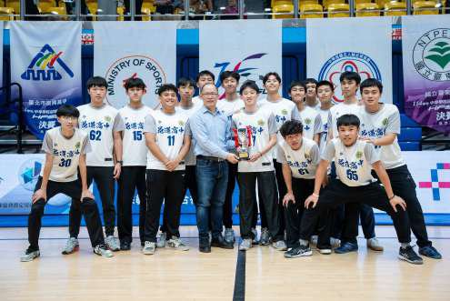

國立成功大學 電機工程學系｜116 學年度特殊選才
自傳及申請動機｜葉陽甫
從實作問題開始，逐步走進資訊與工程
國中Arduino 智慧遮雨棚
→
高一FBref 足球資料分析
→
高二AI 自適應學習系統
→
之後研究與重新驗證
國中時，我和兩位同學製作「多功能智慧遮雨棚」，獲得 2023 IEYI 臺灣選拔賽全國國中組便利生活類銀獎。我負責 Arduino 接線、程式、App Inventor 軟體撰寫與手機控制。感測器偵測雨滴、溫溼度與距離，Arduino 判斷情境後由馬達收放遮雨棚。只要一條線接錯，整套系統就沒有反應。這是我第一次發現，程式要和實體環境一起運作才算完成。
高一時，為了和朋友比較哪位球員近況較好，我自學 Python、pandas 與爬蟲，從 FBref（足球數據網站）整理球員資料。查單一球員很快成功，連續查詢後 IP 卻被封鎖，換 VPN 也只撐一天。後來才理解這是 Rate Limiting，改為加入請求間隔後才穩定跑完。那次我知道，程式沒有錯，也可能因為不了解外部系統而失敗。
高二準備育秀盃時，指導老師要我們以身邊的問題來發想題目。我問在高職教數學的父親，他說同一班學生程度差距很大，老師很難在同一堂課替每個人安排不同的練習。於是我和兩位同學開始製作 AI 自適應學習系統。在三人團隊中，我負責教材匯入、題目生成及作答紀錄回傳的流程，並設計 Code-as-Content 模組：AI 模型生成可帶入不同參數、產生新題目與答案的 Python 出題程式。得獎後，我持續改版與重構，逐步把教材、數學題目、學生練習、AI、判題與學習紀錄整合進同一套系統，讓爸爸帶回課堂，目前已在兩個班級正式使用。
國立成功大學 電機工程學系｜116 學年度特殊選才
自傳及申請動機｜葉陽甫
當系統能運作之後，我開始追問怎麼證明它
系統在 2026 扶輪盃全國高中 AI 競賽獲高中組第一名，首次成為可完整操作的原型；持續整合後，再獲得第 23 屆育秀盃全國高中職 AI 應用類金獎。新增題型時仍依賴雲端大型模型生成程式，題型越多，API 成本與等待時間也隨之累積。我嘗試把部分工作交給本地小模型，實測卻發現小模型生成程式並不穩定。我後來真正想解的，變成怎麼讓小模型少做一點，卻做得更穩。
我注意到同一數學單元的程式結構與常見錯誤會反覆出現，所以我做了兩件事。生成前，用 Scaffolding 與 Domain Functions 先整理好題型規則與工具，降低模型自行規劃的負擔；生成後，用 AST Active Healer 修復能由固定規則唯一判斷修法的局部錯誤，無法確定時就不介入。初版實驗中，完整方法在我自建的指標 MCRI（Math Code Reliability Index）得到 97.41 分。當時我以為這樣就能證明方法有效。
這份研究獲第 66 屆東區科展優等，但未晉級全國；之後在第 25 屆旺宏科學獎入圍全國決賽 20 強（全領域 846 件）。入圍後，評審指出結果的衡量與驗證需要加強，並建議我聚焦在 Healer。我重新設計正式實驗：規則開發與測試資料分開，評估前凍結規則，再逐筆追蹤每個原始失敗。結果，Healer 的安全救援率只有 2.63%。約四成失敗屬於答案或演算法錯誤，本來就不在規則能修的範圍。
初版｜自建指標 MCRI 分數
97.41
→重新設計驗證→
正式實驗｜安全救援率
2.63%
（9／342 個原始失敗修復）
數字變小，但研究邊界變得更清楚。兩者為不同指標，不能直接比較；97.41 不是通過率。我保留這個結果，並寫清楚方法範圍：Healer 可修正輸出格式、局部結構與固定規格錯誤，無法修正數學答案或核心演算法。
國立成功大學 電機工程學系｜116 學年度特殊選才
自傳及申請動機｜葉陽甫
從 AI 軟體系統，走向我還不理解的運算平台
雲端大型模型→
本地小模型→
運算位置與資源→
Edge AI／嵌入式系統→
軟硬體整合
改試本地小模型後，我開始思考：哪些工作留在雲端，哪些能交由本地或裝置端執行？處理器與記憶體會如何限制效能？這些問題讓我注意 Edge AI 與嵌入式系統。
我目前尚未做過裝置端 Edge AI、FPGA、NPU 或晶片設計，也還沒系統學過處理器、記憶體與數位電路的運作原理。
我目前已有
Python · AI 系統開發· 模型串接
系統整合· 程式可靠度研究· 實驗驗證
下一步需要補足
電路· 數位邏輯· 微處理機
計算機結構· 嵌入式系統· 軟硬體整合
國中做遮雨棚時，我會接感測器、寫控制程式，卻不懂電路原理；研究本地小模型時，我能量測成本與延遲，卻還不知道硬體如何影響執行。成大電機的電路學、電子電路實驗與邏輯系統，能幫我補足電路與數位硬體基礎；資訊工程組的計算機組織、作業系統，則能讓我理解程式與模型如何使用處理器與記憶體。我想把所學帶回已正式使用的 AI 學習系統，先改善穩定性，再逐步研究雲端、本地與裝置端的工作分工。

花蓮高中足球代表隊（背號 42）